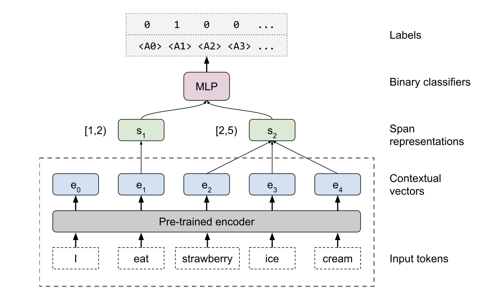

Explainable AI papers Mostly post-hoc models, with a both model specific and model agnostic methods LIME: Explaining Classifications Feature Attribution with Integrated Gradients XRAI: Better Attributions Through Regions Similarity Analysis of Word Representation Interpreting Probes with Control Tasks Similarity with Canonical Correlation Language Guided Bottleneck Models Debugging Tests for Model Explanations Explainations with Causal Concept Effect Impossibility Theorems for Feature Attribution  Probing for sentence structure What Can You Fit in a vector